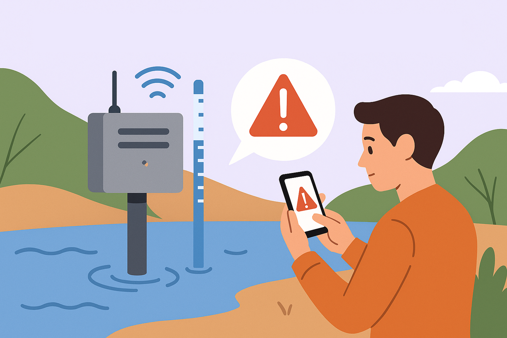
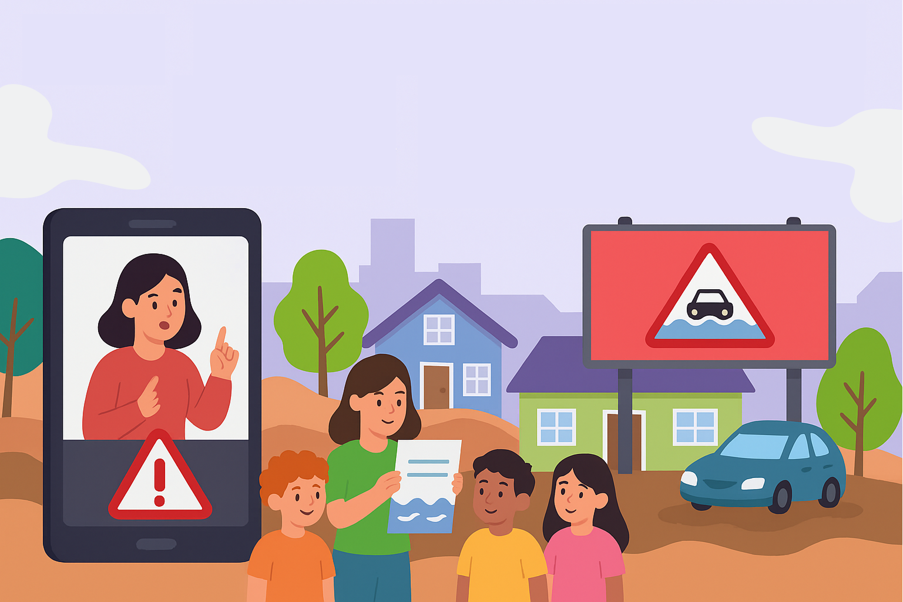
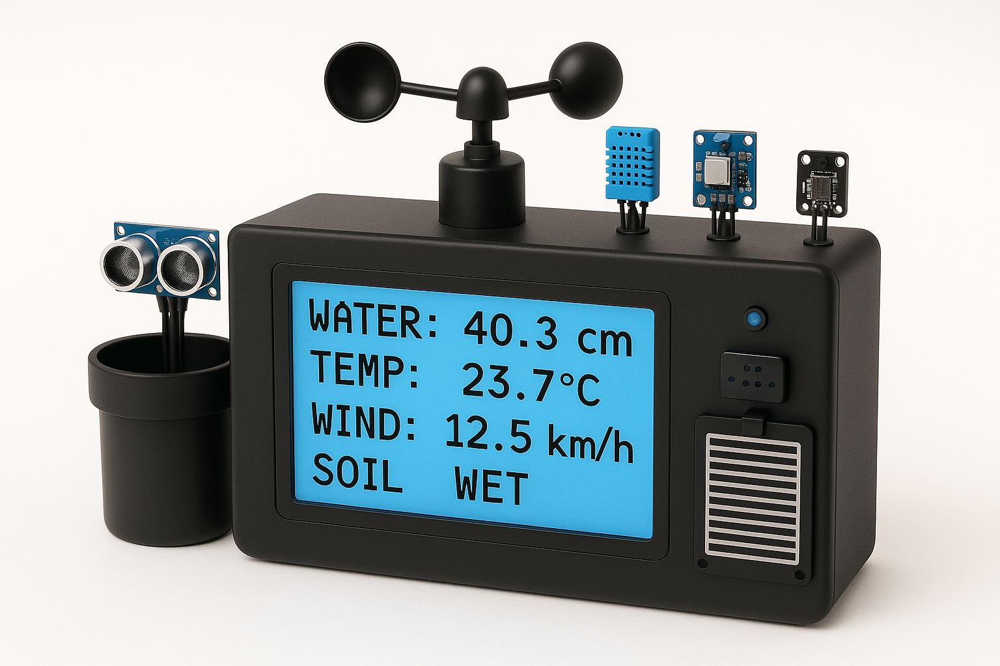

.png)
A Problemática das Enchentes
.png)
.png)
.png)
.png)
.png)
.png)
.png)
.png)
.png)
Enchentes no Brasil: Um Desastre Silencioso
R$ 340 bi
em prejuízos causados por desastres naturais entre 1980 e 2021
+96 mil
vidas perdidas em desastres ambientais nos últimos 40 anos
84%
dos municípios brasileiros já registraram enchentes ou inundações
1 em 3
brasileiros vivem em áreas de risco para desastres naturais
+1 milhão
de pessoas afetadas por inundações somente em 2023
O Brasil enfrenta uma crise silenciosa, onde a ausência de políticas preventivas e o descontrole urbano transformam a chuva em destruição.
Enquanto os números crescem, o impacto é sentido principalmente pelas populações mais vulneráveis.
FloodGuard
A FloodGuard é uma plataforma integrada que combina prevenção tecnológica de enchentes por meio de monitoramento de níveis de água, umidade e chuva, com educação interativa em situações de risco.

Sistema de Alerta Precoce
- Monitora níveis de água em tempo real com sensores IoT
- Dispara alertas imediatos via SMS, sirenes e app
- Exibe áreas de risco em mapas interativos para a população
Módulo Educacional
- Simuladores interativos para preparação comunitária
- Conteúdo acessível para crianças, idosos e pessoas com deficiência

Campanha de Conscientização
- Vídeos de conscientização impactantes em mídias sociais
- Parcerias com escolas, ONGs e líderes comunitários
- Anúncios segmentados em rádios e outdoors nas regiões de risco

E como faremos isso?
Com sensores físicos, inteligência embarcada e tecnologias web modernas, a FloodGuard constrói um ecossistema completo de monitoramento e alerta que salva vidas.

IoT & Sensores
Sensores de umidade, vento, pressão e proximidade integrados via Arduino.

Linguagem C
Programação de baixo nível para controle eficiente de hardware.

Python
Processamento de dados, comunicação e automação.

HTML5
Estrutura semântica acessível para exibir dados com clareza.

CSS3
Visual responsivo e estilização leve para qualquer dispositivo.

JavaScript
Integrações em tempo real e interações dinâmicas com sensores e mapas.

Mapas Interativos
Exibição georreferenciada de dados e alertas preventivos.
Reduzir riscos.
Proteger vidas.
A FloodGuard nasce com um propósito claro:
minimizar os danos causados por enchentes
e salvar vidas.
Nosso compromisso é com a prevenção.
Quem será impactado pela FloodGuard?
A aplicação é pensada para proteger a todos, com foco em quem mais precisa de atenção durante emergências climáticas.
BENEFÍCIOS DA FLOODGUARD
Monitoramento em tempo real
Sensores avançados fornecem dados instantâneos sobre os níveis de água, permitindo uma resposta rápida e informada durante uma enchente.